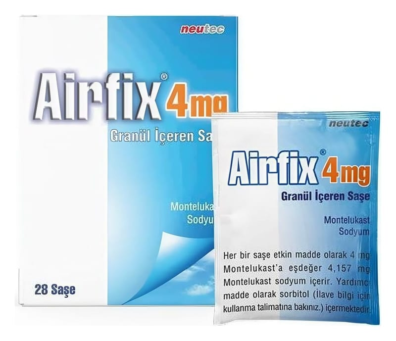

Airfix 4 mg Granül İçeren Saşe, 28 Adet

Ne için kullanılır
KT · Bölüm 1AİRFİX lökotrienler adı verilen maddeleri engelleyen bir lökotrien alıcısı (reseptör) antagonistidir (karşıt etki gösteren). Lökotrienler akciğerlerde solunum yollarının daralmasına ve şişmesine neden olur AİRFİX, lökotrienleri engelleyerek astım belirtilerini iyileştirir ve astım kontrol altına alınmasına yardımcı olur ve mevsimsel alerji belirtilerini azaltır (saman nezlesi veya mevsimsel alerjik nezle (rinit) olarak da bilinir).
AİRFİX inatçı astımın tedavisi ve alerjik nezlenin (rinitin) belirtilerinin giderilmesi için reçetelenir:
Astım AİRFİX, 12 aylık – 5 yaş arası hastalarda, hafif–orta şiddette astımın inhale kortikosteroidlerle kontrol altına alınamaması ve kısa etkili beta agonistlerin yetersiz kalması durumlarında, ilave tedavi olarak astım tedavisi için kullanılmalıdır.
AİRFİX, 2-5 yaş arası hafif persistan astımı olan, oral kortikosteroid kullanımını gerektiren, şiddetli astım atağı geçmişi olmayan hastalarda ve inhale kortikosteroid kullanamayan hastalarda alternatif tedavi seçeneğidir.
AİRFİX, 2 yaş ve üzeri hastalarda, egzersizin yol açtığı bronş daralmasına bağlı astım astımdan korunmak için kullanılır.
Doktorunuz, çocuğunuzun astımının belirtilerine ve ciddiyetine bağlı olarak AİRFİX’in nasıl kullanılması gerektiğini belirleyecektir.
AİRFİX’i bir astım atağında kısa süreli iyileşme sağlamak için kullanmayın. Astım atağı yaşadığınızda doktorunuzun astım ataklarının tedavisi için size söylediklerini yapmanız gerekir.
Alerjik Rinit (nezle) AİRFİX alerjik rinit belirtilerinin (hapşırık, burun tıkanıklığı, burun akıntısı ve kaşıntısı) kontrolüne yardımcı olmak amacıyla kullanılır. AİRFİX, 2 yaş ve üzeri çocuk ve yetişkinlerde mevsimsel alerjik rinit tedavisinde (yılın bir bölümünde ortaya çıkan, evin dışında yaşanan alerjiler) ve 6 aylık ve daha büyük hastalarda pereniyal alerjik rinit (yıl boyunca ev içinde yaşanan alerjiler) tedavisinde kullanılır.
AİRFİX, 28 saşelik ambalajlarda kullanıma sunulmuştur. Her bir saşe 4 mg montelukast içerir.
Astım nedir? Astım uzun süreli bir hastalıktır. Astım şunları içerir: • Daralan solunum yollarından ötürü nefes almada zorluk. Solunum yollarının bu daralması çeşitli durumlara göre iyileşir ya da kötüleşir. • Sigara dumanı, polen, soğuk hava veya egzersiz gibi birçok şeye tepki veren hassas solunum yolları • Solunum yollarında şişme (iltihap)
Astım belirtileri şunlardır: • Öksürük • Hırıltılı solunum • Göğüs sıkışması
Alerjik rinit nedir? • Saman nezlesi olarak da bilinen mevsimsel alerjik rinit ağaç, çimen ve ot polenleri gibi ev dışında bulunan alerjenler (alerjik reaksiyona neden olan maddeler) ile tetiklenir. • Uzun süre devam eden (pereniyal) alerjik rinit yıl boyu görülebilir ve genellikle ev tozu akarları, hayvan tüyü kepeği ve/veya küf sporları gibi ev içindeki alerjenler ile tetiklenir. • Alerjik rinit belirtileri aşağıdakileri içerebilir:
− Burun tıkanıklığı, akıntısı ve/veya kaşıntısı − Hapşırık